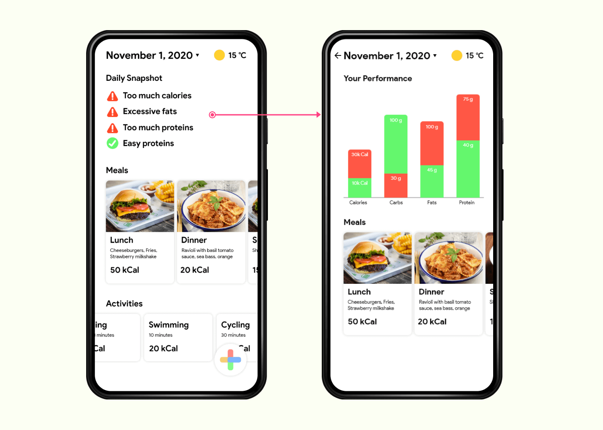
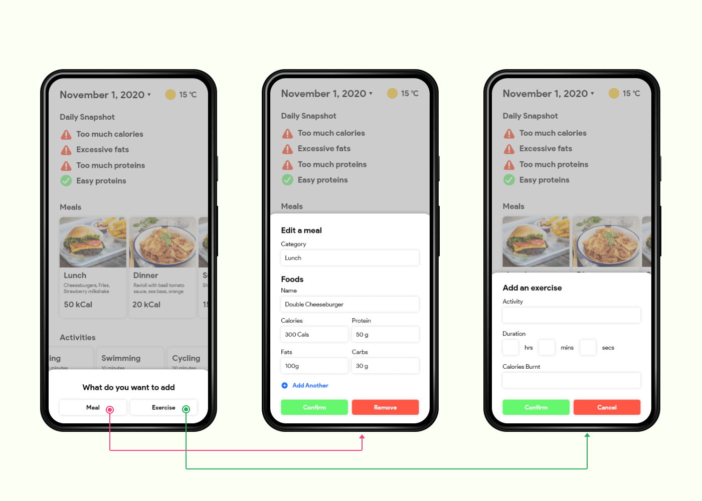
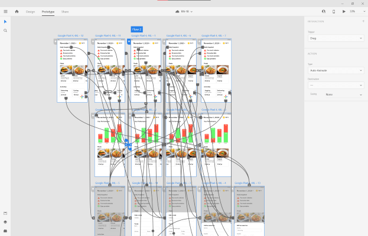

Meal & Fitness Tracking App
Practicing iterative design process

01/ Overview
The goal of the project is to practice the iterative design process - from paper prototype to hi-fi Static Prototype and finally interactive hi-fi prototype and to learn the basics of React Native. The prototypes are completed using Adobe XD.
02/ Paper Prototyping
I started by drawing out quick sketches of the possible components. The paper prototype allowed me to think about the interactions of the users with the system. However, the functionality of the app is pre-defined based on assignment requirements.
03/ Static Prototype
After defining the structural and navigational components of the application, I then move on to design the hi-fi static prototype using Adobe XD.
 04/ Interactive Prototype
To stimulate the experience the users might be having, I continue to add interactions to the static prototype to create an interactive prototype that could be used for usability testing.
05/ Implementation
Due to time constraints and basic requirement of the assignment, the design of the implementation looks less polished as the design above. The main goal of the implementation phase is to learn React Native as this is my first time learning React Native. However, I tried my best to maintain the navigational structure of the design.
The API is provided to me. My responsibility is to design the component hierarchy and implement it using React Native.

06/ Conclusion and Reflections
I have learned a lot about the iterative process of designing from lo-fi to hi-fi. I also learned that the design for lo-fi are meant to gain an overall understanding of how the app might look like, rather than committing to that design. The design of the final product has changed quite significantly since the paper prototype as more low level details has to be defined.
Just to iterate, this project was meant to gain an understanding of the iterative design process rather than being a case study. In the real world however, user research such as contextual inquiry should be performed before designing application.
As this was my first time using React Native, it was very rewarding as I gained an understanding of basics of React Native. If I have had more time, I would have tried to implement the design as closely as the prototype as possible.
Connect with me!
👋👋👋
Open to any job and collaboration opportunities, or even a coffee chat! Feel free to connect with me with any of the options below.